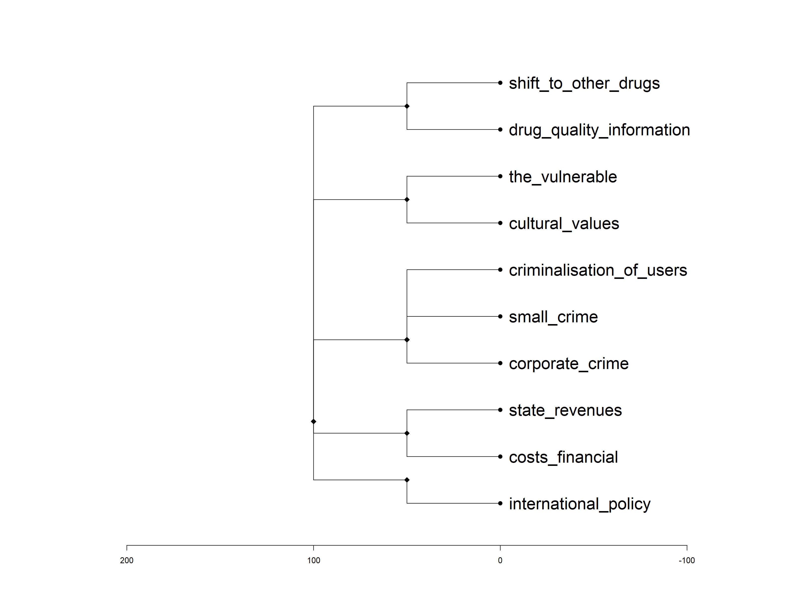

minimal-dmcda-example.RmdCriteria are the criteria that are important for making the decisions. These will often be outcomes resulting from the choices made in each scenario. The criteria are what drive the decisions. They are normally not directly under control, but are assumed to result from the decisions.
dmcda::summary_criteria(criteria);
#> levelName
#> 1 criteria
#> 2 ¦--user_health
#> 3 ¦ ¦--shift_to_other_drugs
#> 4 ¦ °--drug_quality_information
#> 5 ¦--public
#> 6 ¦ ¦--the_vulnerable
#> 7 ¦ °--cultural_values
#> 8 ¦--crime
#> 9 ¦ ¦--criminalisation_of_users
#> 10 ¦ ¦--small_crime
#> 11 ¦ °--corporate_crime
#> 12 ¦--economy
#> 13 ¦ ¦--state_revenues
#> 14 ¦ °--costs_financial
#> 15 °--political
#> 16 °--international_policy
| id | parentCriterion | label | description | isLeaf |
|---|---|---|---|---|
| criteria | - | Criteria | - | FALSE |
| user_health | criteria | User health | - | FALSE |
| shift_to_other_drugs | user_health | Shift to other drugs | Consumption of other more harmful substances. | TRUE |
| drug_quality_information | user_health | Drug quality / information | Product quality (adulteration, unknown dose/purity) and proper information about risky use. | TRUE |
| public | criteria | Public | - | FALSE |
| the_vulnerable | public | The vulnerable | Protection of the vulnerable (children, young adults and psychiatric patients), including patients (development of medical applications) and parental control about MDMA use by minors. | TRUE |
| cultural_values | public | Cultural Values | Respect for self-determination to use recreational drugs, includes the availability of ‘clean’ pills without an environmental burden. | TRUE |
| crime | criteria | Crime | - | FALSE |
| criminalisation_of_users | crime | Criminalisation of users | Criminalisation of users (criminal record, stigmatisation). | TRUE |
| small_crime | crime | Small crime | Acquisitive crime, public violence and dealing in the public space. | TRUE |
| corporate_crime | crime | Corporate crime | Undermining and involvement in violence (assassination, extortion), money-laundering, prostitution, smuggling (does not include costs of enforcement). | TRUE |
| economy | criteria | Economy | - | FALSE |
| state_revenues | economy | State revenues | State revenues (VAT, licences). | TRUE |
| costs_financial | economy | Costs (financial) | Public financial costs: health costs, addiction treatment, absenteeism, casualties (traffic), environmental pollution, enforcement (prison, police, judiciary, rehabilitation). | TRUE |
| political | criteria | Political | - | FALSE |
| international_policy | political | International Policy | Violation of international drug treaties. Damage of international image. | TRUE |
The decisions are the choices that have to be made. Each decision consists of two or more mutually exclusive and exhaustive alternatives.
| id | label | description | choices |
|---|---|---|---|
| legal_status_possession | Legal status of possession | Whether possession of the substance is legal or illegal; or ‘gedoogd’, a construction where possession is formally illegal but that status is not enforced. | ‘Illegal’, ‘’Gedoogd’’ & ‘Legal’ |
| quality_monitoring | Quality monitoring | Whether an infrastructure exists that allows monitoring the quality of the substance. | ‘None’, ‘Incidently’ & ‘Structurally’ |
Whether possession of the substance is legal or illegal; or ‘gedoogd’, a construction where possession is formally illegal but that status is not enforced.
Illegal: Possession is illegal, and this is actively enforced.
‘Gedoogd’: Possession is illegal, but this is not actively enforced.
Legal: Possession is legal.
Whether an infrastructure exists that allows monitoring the quality of the substance.
None: There is no quality monitoring whatsoever.
Incidently: Monitoring occurs but only incidently, precluding detecting patterns in the substance’s quality and dose over time.
Structurally: Structural monitoring of the substance dose and quality occurs, enabling mapping of the substance’s quality and dose over time.
performance_table <-
dmcda::performance_table(criteria,
decisions_and_alternatives);
# write.table(performance_table,
# file.path(currentDir, "empty_performance_table.csv"),
# col.names = FALSE,
# row.names = FALSE);
knitr::kable(performance_table);| NA | NA | NA | NA | shift_to_other_drugs | drug_quality_information | the_vulnerable | cultural_values | criminalisation_of_users | small_crime | corporate_crime | state_revenues | costs_financial | international_policy |
| NA | NA | NA | NA | Shift to other drugs | Drug quality / information | The vulnerable | Cultural Values | Criminalisation of users | Small crime | Corporate crime | State revenues | Costs (financial) | International Policy |
| legal_status_possession | 1 | Legal status of possession | Illegal | NA | NA | NA | NA | NA | NA | NA | NA | NA | NA |
| legal_status_possession | 2 | Legal status of possession | ‘Gedoogd’ | NA | NA | NA | NA | NA | NA | NA | NA | NA | NA |
| legal_status_possession | 3 | Legal status of possession | Legal | NA | NA | NA | NA | NA | NA | NA | NA | NA | NA |
| quality_monitoring | 1 | Quality monitoring | None | NA | NA | NA | NA | NA | NA | NA | NA | NA | NA |
| quality_monitoring | 2 | Quality monitoring | Incidently | NA | NA | NA | NA | NA | NA | NA | NA | NA | NA |
| quality_monitoring | 3 | Quality monitoring | Structurally | NA | NA | NA | NA | NA | NA | NA | NA | NA | NA |
This is the table with all values to be estimated. The values can be filled either through filling the table and importing it, or through specifying specific values, which enables also providing justifications and linking to assertions and sources for support.
Estimates are the estimates of the effects that every alternative will have on each of the specified criteria. Ideally, every estimate has a justification, which is based on assertions (statements of facts or assumptions) that can be traced back to sources (e.g. scientific articles, policy documents, expert consensus, etc). For example,
estimates <-
dmcda::load_estimates(currentDir,
decisions_and_alternatives = decisions_and_alternatives,
criteria = criteria);| decision_id | decision_label | decision_alternative_value | alternative_label | criterion_id | criterion_label | value | label | description | id |
|---|---|---|---|---|---|---|---|---|---|
| legal_status_possession | Legal status of possession | 1 | Illegal | drug_quality_information | Drug quality / information | 0 | If possession is illegal, obtaining accurate information on drug quality becomes harder. | Here, an extensive description can be provided. This can explain, in human-readable language, why this estimate (see ‘value’) is arrived at, based on the referenced assertion(s). | id_1 |
| legal_status_possession | Legal status of possession | 2 | ‘Gedoogd’ | drug_quality_information | Drug quality / information | 0 | Legal status of possession only has effect on drug quality information if possession is illegal. | Here, an extensive description can be provided. This can explain, in human-readable language, why this estimate (see ‘value’) is arrived at, based on the referenced assertion(s). | id_2 |
| legal_status_possession | Legal status of possession | 3 | Legal | drug_quality_information | Drug quality / information | 0 | Legal status of possession only has effect on drug quality information if possession is illegal. | Here, an extensive description can be provided. This can explain, in human-readable language, why this estimate (see ‘value’) is arrived at, based on the referenced assertion(s). | id_3 |
| quality_monitoring | Quality monitoring | 1 | None | drug_quality_information | Drug quality / information | -1 | Without monitoring, there is poor information. | Here, an extensive description can be provided. This can explain, in human-readable language, why this estimate (see ‘value’) is arrived at, based on the referenced assertion(s). | id_4 |
| quality_monitoring | Quality monitoring | 2 | Incidently | drug_quality_information | Drug quality / information | 0 | With mediocre monitoring, there is mediocre information. | Here, an extensive description can be provided. This can explain, in human-readable language, why this estimate (see ‘value’) is arrived at, based on the referenced assertion(s). | id_5 |
| quality_monitoring | Quality monitoring | 3 | Structurally | drug_quality_information | Drug quality / information | 1 | With good monitoring, there is good information. | Here, an extensive description can be provided. This can explain, in human-readable language, why this estimate (see ‘value’) is arrived at, based on the referenced assertion(s). | id_6 |
Scenarios are sets of coherent alternative selections for every decision.
scenarios_and_alternatives <-
dmcda::load_scenarios(currentDir,
decisions_and_alternatives = decisions_and_alternatives);| scenario_id | label | description |
|---|---|---|
| repressive | A repressive policy | This is the scenario where the most repressive policy option is chosen for every decision. |
| liberal | A liberal policy | This is the scenario where the most liberal policy option is chosen for every decision. |
| scenario | decision | alternative | scenario_id | decision_id | decision_alternative_value |
|---|---|---|---|---|---|
| A repressive policy | Quality monitoring | None | repressive | quality_monitoring | 1 |
| A repressive policy | Legal status of possession | Illegal | repressive | legal_status_possession | 1 |
| A liberal policy | Quality monitoring | Structurally | liberal | quality_monitoring | 3 |
| A liberal policy | Legal status of possession | Legal | liberal | legal_status_possession | 3 |
| weight_profile_id | criterion_id | criterion_label | weight |
|---|---|---|---|
| unit_weights | user_health | User health | 1 |
| unit_weights | shift_to_other_drugs | Shift to other drugs | 1 |
| unit_weights | drug_quality_information | Drug quality / information | 1 |
| unit_weights | public | Public | 1 |
| unit_weights | the_vulnerable | The vulnerable | 1 |
| unit_weights | cultural_values | Cultural Values | 1 |
| unit_weights | crime | Crime | 1 |
| unit_weights | criminalisation_of_users | Criminalisation of users | 1 |
| unit_weights | small_crime | Small crime | 1 |
| unit_weights | corporate_crime | Corporate crime | 1 |
| unit_weights | economy | Economy | 1 |
| unit_weights | state_revenues | State revenues | 1 |
| unit_weights | costs_financial | Costs (financial) | 1 |
| unit_weights | political | Political | 1 |
| unit_weights | international_policy | International Policy | 1 |
| unit_weights | criteria | Criteria | 1 |
| criterion_id | multipliedWeight | profile_id |
|---|---|---|
| user_health | 1 | unit_weights |
| shift_to_other_drugs | 1 | unit_weights |
| drug_quality_information | 1 | unit_weights |
| public | 1 | unit_weights |
| the_vulnerable | 1 | unit_weights |
| cultural_values | 1 | unit_weights |
| crime | 1 | unit_weights |
| criminalisation_of_users | 1 | unit_weights |
| small_crime | 1 | unit_weights |
| corporate_crime | 1 | unit_weights |
| economy | 1 | unit_weights |
| state_revenues | 1 | unit_weights |
| costs_financial | 1 | unit_weights |
| political | 1 | unit_weights |
| international_policy | 1 | unit_weights |
| criteria | 1 | unit_weights |
estimates <-
dmcda::autofill_estimates(estimates=estimates,
criteria=criteria,
decisions_and_alternatives=decisions_and_alternatives);In this dynamic multi criteria decision aid, 10 criteria have been specified, as well as 2 decisions that together encompass a total of 6 alternatives. This means that 60 estimates are required. Of these, 6 have been specified.
| decision_id | decision_label | decision_alternative_value | alternative_label | criterion_id | criterion_label | value | label | description | id |
|---|---|---|---|---|---|---|---|---|---|
| legal_status_possession | Legal status of possession | 1 | Illegal | drug_quality_information | Drug quality / information | 0 | If possession is illegal, obtaining accurate information on drug quality becomes harder. | Here, an extensive description can be provided. This can explain, in human-readable language, why this estimate (see ‘value’) is arrived at, based on the referenced assertion(s). | id_1 |
| legal_status_possession | Legal status of possession | 2 | ‘Gedoogd’ | drug_quality_information | Drug quality / information | 0 | Legal status of possession only has effect on drug quality information if possession is illegal. | Here, an extensive description can be provided. This can explain, in human-readable language, why this estimate (see ‘value’) is arrived at, based on the referenced assertion(s). | id_2 |
| legal_status_possession | Legal status of possession | 3 | Legal | drug_quality_information | Drug quality / information | 0 | Legal status of possession only has effect on drug quality information if possession is illegal. | Here, an extensive description can be provided. This can explain, in human-readable language, why this estimate (see ‘value’) is arrived at, based on the referenced assertion(s). | id_3 |
| quality_monitoring | Quality monitoring | 1 | None | drug_quality_information | Drug quality / information | -1 | Without monitoring, there is poor information. | Here, an extensive description can be provided. This can explain, in human-readable language, why this estimate (see ‘value’) is arrived at, based on the referenced assertion(s). | id_4 |
| quality_monitoring | Quality monitoring | 2 | Incidently | drug_quality_information | Drug quality / information | 0 | With mediocre monitoring, there is mediocre information. | Here, an extensive description can be provided. This can explain, in human-readable language, why this estimate (see ‘value’) is arrived at, based on the referenced assertion(s). | id_5 |
| quality_monitoring | Quality monitoring | 3 | Structurally | drug_quality_information | Drug quality / information | 1 | With good monitoring, there is good information. | Here, an extensive description can be provided. This can explain, in human-readable language, why this estimate (see ‘value’) is arrived at, based on the referenced assertion(s). | id_6 |
| legal_status_possession | Legal status of possession | 1 | Illegal | shift_to_other_drugs | Shift to other drugs | NA | Autofilled | This estimate was not ‘manually’ specified, and has therefore been autofilled with 0. | id_7 |
| legal_status_possession | Legal status of possession | 1 | Illegal | the_vulnerable | The vulnerable | NA | Autofilled | This estimate was not ‘manually’ specified, and has therefore been autofilled with 0. | id_7 |
| legal_status_possession | Legal status of possession | 1 | Illegal | cultural_values | Cultural Values | NA | Autofilled | This estimate was not ‘manually’ specified, and has therefore been autofilled with 0. | id_7 |
| legal_status_possession | Legal status of possession | 1 | Illegal | criminalisation_of_users | Criminalisation of users | NA | Autofilled | This estimate was not ‘manually’ specified, and has therefore been autofilled with 0. | id_7 |
| legal_status_possession | Legal status of possession | 1 | Illegal | small_crime | Small crime | NA | Autofilled | This estimate was not ‘manually’ specified, and has therefore been autofilled with 0. | id_7 |
| legal_status_possession | Legal status of possession | 1 | Illegal | corporate_crime | Corporate crime | NA | Autofilled | This estimate was not ‘manually’ specified, and has therefore been autofilled with 0. | id_7 |
| legal_status_possession | Legal status of possession | 1 | Illegal | state_revenues | State revenues | NA | Autofilled | This estimate was not ‘manually’ specified, and has therefore been autofilled with 0. | id_7 |
| legal_status_possession | Legal status of possession | 1 | Illegal | costs_financial | Costs (financial) | NA | Autofilled | This estimate was not ‘manually’ specified, and has therefore been autofilled with 0. | id_7 |
| legal_status_possession | Legal status of possession | 1 | Illegal | international_policy | International Policy | NA | Autofilled | This estimate was not ‘manually’ specified, and has therefore been autofilled with 0. | id_7 |
| legal_status_possession | Legal status of possession | 2 | ‘Gedoogd’ | shift_to_other_drugs | Shift to other drugs | NA | Autofilled | This estimate was not ‘manually’ specified, and has therefore been autofilled with 0. | id_7 |
| legal_status_possession | Legal status of possession | 2 | ‘Gedoogd’ | the_vulnerable | The vulnerable | NA | Autofilled | This estimate was not ‘manually’ specified, and has therefore been autofilled with 0. | id_7 |
| legal_status_possession | Legal status of possession | 2 | ‘Gedoogd’ | cultural_values | Cultural Values | NA | Autofilled | This estimate was not ‘manually’ specified, and has therefore been autofilled with 0. | id_7 |
| legal_status_possession | Legal status of possession | 2 | ‘Gedoogd’ | criminalisation_of_users | Criminalisation of users | NA | Autofilled | This estimate was not ‘manually’ specified, and has therefore been autofilled with 0. | id_7 |
| legal_status_possession | Legal status of possession | 2 | ‘Gedoogd’ | small_crime | Small crime | NA | Autofilled | This estimate was not ‘manually’ specified, and has therefore been autofilled with 0. | id_7 |
| legal_status_possession | Legal status of possession | 2 | ‘Gedoogd’ | corporate_crime | Corporate crime | NA | Autofilled | This estimate was not ‘manually’ specified, and has therefore been autofilled with 0. | id_7 |
| legal_status_possession | Legal status of possession | 2 | ‘Gedoogd’ | state_revenues | State revenues | NA | Autofilled | This estimate was not ‘manually’ specified, and has therefore been autofilled with 0. | id_7 |
| legal_status_possession | Legal status of possession | 2 | ‘Gedoogd’ | costs_financial | Costs (financial) | NA | Autofilled | This estimate was not ‘manually’ specified, and has therefore been autofilled with 0. | id_7 |
| legal_status_possession | Legal status of possession | 2 | ‘Gedoogd’ | international_policy | International Policy | NA | Autofilled | This estimate was not ‘manually’ specified, and has therefore been autofilled with 0. | id_7 |
| legal_status_possession | Legal status of possession | 3 | Legal | shift_to_other_drugs | Shift to other drugs | NA | Autofilled | This estimate was not ‘manually’ specified, and has therefore been autofilled with 0. | id_7 |
| legal_status_possession | Legal status of possession | 3 | Legal | the_vulnerable | The vulnerable | NA | Autofilled | This estimate was not ‘manually’ specified, and has therefore been autofilled with 0. | id_7 |
| legal_status_possession | Legal status of possession | 3 | Legal | cultural_values | Cultural Values | NA | Autofilled | This estimate was not ‘manually’ specified, and has therefore been autofilled with 0. | id_7 |
| legal_status_possession | Legal status of possession | 3 | Legal | criminalisation_of_users | Criminalisation of users | NA | Autofilled | This estimate was not ‘manually’ specified, and has therefore been autofilled with 0. | id_7 |
| legal_status_possession | Legal status of possession | 3 | Legal | small_crime | Small crime | NA | Autofilled | This estimate was not ‘manually’ specified, and has therefore been autofilled with 0. | id_7 |
| legal_status_possession | Legal status of possession | 3 | Legal | corporate_crime | Corporate crime | NA | Autofilled | This estimate was not ‘manually’ specified, and has therefore been autofilled with 0. | id_7 |
| legal_status_possession | Legal status of possession | 3 | Legal | state_revenues | State revenues | NA | Autofilled | This estimate was not ‘manually’ specified, and has therefore been autofilled with 0. | id_7 |
| legal_status_possession | Legal status of possession | 3 | Legal | costs_financial | Costs (financial) | NA | Autofilled | This estimate was not ‘manually’ specified, and has therefore been autofilled with 0. | id_7 |
| legal_status_possession | Legal status of possession | 3 | Legal | international_policy | International Policy | NA | Autofilled | This estimate was not ‘manually’ specified, and has therefore been autofilled with 0. | id_7 |
| quality_monitoring | Quality monitoring | 1 | None | shift_to_other_drugs | Shift to other drugs | NA | Autofilled | This estimate was not ‘manually’ specified, and has therefore been autofilled with 0. | id_7 |
| quality_monitoring | Quality monitoring | 1 | None | the_vulnerable | The vulnerable | NA | Autofilled | This estimate was not ‘manually’ specified, and has therefore been autofilled with 0. | id_7 |
| quality_monitoring | Quality monitoring | 1 | None | cultural_values | Cultural Values | NA | Autofilled | This estimate was not ‘manually’ specified, and has therefore been autofilled with 0. | id_7 |
| quality_monitoring | Quality monitoring | 1 | None | criminalisation_of_users | Criminalisation of users | NA | Autofilled | This estimate was not ‘manually’ specified, and has therefore been autofilled with 0. | id_7 |
| quality_monitoring | Quality monitoring | 1 | None | small_crime | Small crime | NA | Autofilled | This estimate was not ‘manually’ specified, and has therefore been autofilled with 0. | id_7 |
| quality_monitoring | Quality monitoring | 1 | None | corporate_crime | Corporate crime | NA | Autofilled | This estimate was not ‘manually’ specified, and has therefore been autofilled with 0. | id_7 |
| quality_monitoring | Quality monitoring | 1 | None | state_revenues | State revenues | NA | Autofilled | This estimate was not ‘manually’ specified, and has therefore been autofilled with 0. | id_7 |
| quality_monitoring | Quality monitoring | 1 | None | costs_financial | Costs (financial) | NA | Autofilled | This estimate was not ‘manually’ specified, and has therefore been autofilled with 0. | id_7 |
| quality_monitoring | Quality monitoring | 1 | None | international_policy | International Policy | NA | Autofilled | This estimate was not ‘manually’ specified, and has therefore been autofilled with 0. | id_7 |
| quality_monitoring | Quality monitoring | 2 | Incidently | shift_to_other_drugs | Shift to other drugs | NA | Autofilled | This estimate was not ‘manually’ specified, and has therefore been autofilled with 0. | id_7 |
| quality_monitoring | Quality monitoring | 2 | Incidently | the_vulnerable | The vulnerable | NA | Autofilled | This estimate was not ‘manually’ specified, and has therefore been autofilled with 0. | id_7 |
| quality_monitoring | Quality monitoring | 2 | Incidently | cultural_values | Cultural Values | NA | Autofilled | This estimate was not ‘manually’ specified, and has therefore been autofilled with 0. | id_7 |
| quality_monitoring | Quality monitoring | 2 | Incidently | criminalisation_of_users | Criminalisation of users | NA | Autofilled | This estimate was not ‘manually’ specified, and has therefore been autofilled with 0. | id_7 |
| quality_monitoring | Quality monitoring | 2 | Incidently | small_crime | Small crime | NA | Autofilled | This estimate was not ‘manually’ specified, and has therefore been autofilled with 0. | id_7 |
| quality_monitoring | Quality monitoring | 2 | Incidently | corporate_crime | Corporate crime | NA | Autofilled | This estimate was not ‘manually’ specified, and has therefore been autofilled with 0. | id_7 |
| quality_monitoring | Quality monitoring | 2 | Incidently | state_revenues | State revenues | NA | Autofilled | This estimate was not ‘manually’ specified, and has therefore been autofilled with 0. | id_7 |
| quality_monitoring | Quality monitoring | 2 | Incidently | costs_financial | Costs (financial) | NA | Autofilled | This estimate was not ‘manually’ specified, and has therefore been autofilled with 0. | id_7 |
| quality_monitoring | Quality monitoring | 2 | Incidently | international_policy | International Policy | NA | Autofilled | This estimate was not ‘manually’ specified, and has therefore been autofilled with 0. | id_7 |
| quality_monitoring | Quality monitoring | 3 | Structurally | shift_to_other_drugs | Shift to other drugs | NA | Autofilled | This estimate was not ‘manually’ specified, and has therefore been autofilled with 0. | id_7 |
| quality_monitoring | Quality monitoring | 3 | Structurally | the_vulnerable | The vulnerable | NA | Autofilled | This estimate was not ‘manually’ specified, and has therefore been autofilled with 0. | id_7 |
| quality_monitoring | Quality monitoring | 3 | Structurally | cultural_values | Cultural Values | NA | Autofilled | This estimate was not ‘manually’ specified, and has therefore been autofilled with 0. | id_7 |
| quality_monitoring | Quality monitoring | 3 | Structurally | criminalisation_of_users | Criminalisation of users | NA | Autofilled | This estimate was not ‘manually’ specified, and has therefore been autofilled with 0. | id_7 |
| quality_monitoring | Quality monitoring | 3 | Structurally | small_crime | Small crime | NA | Autofilled | This estimate was not ‘manually’ specified, and has therefore been autofilled with 0. | id_7 |
| quality_monitoring | Quality monitoring | 3 | Structurally | corporate_crime | Corporate crime | NA | Autofilled | This estimate was not ‘manually’ specified, and has therefore been autofilled with 0. | id_7 |
| quality_monitoring | Quality monitoring | 3 | Structurally | state_revenues | State revenues | NA | Autofilled | This estimate was not ‘manually’ specified, and has therefore been autofilled with 0. | id_7 |
| quality_monitoring | Quality monitoring | 3 | Structurally | costs_financial | Costs (financial) | NA | Autofilled | This estimate was not ‘manually’ specified, and has therefore been autofilled with 0. | id_7 |
| quality_monitoring | Quality monitoring | 3 | Structurally | international_policy | International Policy | NA | Autofilled | This estimate was not ‘manually’ specified, and has therefore been autofilled with 0. | id_7 |
estimates <-
dmcda::weigh_estimates(estimates=estimates,
weights=weights);
scenario_scores <-
dmcda::scenario_scores(criteria = criteria,
decisions_and_alternatives = decisions_and_alternatives,
estimates = estimates,
scenarios_and_alternatives = scenarios_and_alternatives,
weights = weights);| decision_id | decision_alternative_value | criterion_id | score |
|---|---|---|---|
| legal_status_possession | 1 | shift_to_other_drugs | 0 |
| legal_status_possession | 1 | drug_quality_information | 0 |
| legal_status_possession | 1 | the_vulnerable | 0 |
| legal_status_possession | 1 | cultural_values | 0 |
| legal_status_possession | 1 | criminalisation_of_users | 0 |
| legal_status_possession | 1 | small_crime | 0 |
| legal_status_possession | 1 | corporate_crime | 0 |
| legal_status_possession | 1 | state_revenues | 0 |
| legal_status_possession | 1 | costs_financial | 0 |
| legal_status_possession | 1 | international_policy | 0 |
| quality_monitoring | 1 | shift_to_other_drugs | 0 |
| quality_monitoring | 1 | drug_quality_information | -1 |
| quality_monitoring | 1 | the_vulnerable | 0 |
| quality_monitoring | 1 | cultural_values | 0 |
| quality_monitoring | 1 | criminalisation_of_users | 0 |
| quality_monitoring | 1 | small_crime | 0 |
| quality_monitoring | 1 | corporate_crime | 0 |
| quality_monitoring | 1 | state_revenues | 0 |
| quality_monitoring | 1 | costs_financial | 0 |
| quality_monitoring | 1 | international_policy | 0 |
| decision_id | decision_alternative_value | criterion_id | score |
|---|---|---|---|
| legal_status_possession | 3 | shift_to_other_drugs | 0 |
| legal_status_possession | 3 | drug_quality_information | 0 |
| legal_status_possession | 3 | the_vulnerable | 0 |
| legal_status_possession | 3 | cultural_values | 0 |
| legal_status_possession | 3 | criminalisation_of_users | 0 |
| legal_status_possession | 3 | small_crime | 0 |
| legal_status_possession | 3 | corporate_crime | 0 |
| legal_status_possession | 3 | state_revenues | 0 |
| legal_status_possession | 3 | costs_financial | 0 |
| legal_status_possession | 3 | international_policy | 0 |
| quality_monitoring | 3 | shift_to_other_drugs | 0 |
| quality_monitoring | 3 | drug_quality_information | 1 |
| quality_monitoring | 3 | the_vulnerable | 0 |
| quality_monitoring | 3 | cultural_values | 0 |
| quality_monitoring | 3 | criminalisation_of_users | 0 |
| quality_monitoring | 3 | small_crime | 0 |
| quality_monitoring | 3 | corporate_crime | 0 |
| quality_monitoring | 3 | state_revenues | 0 |
| quality_monitoring | 3 | costs_financial | 0 |
| quality_monitoring | 3 | international_policy | 0 |
This is an overview of all assertions (all ‘facts’. ‘claims’, ‘assumptions’, or ‘propositions’ that are based on some form of evidence) that this DMCDA is based on. Assertions can have a certain evidence quality, which can be specified and scored.
| id | label | source |
|---|---|---|
| placeholder_assertion | Description of this assertion | one or multiple sources specified |
When formulating assertions, it is also good practice to formulate counterfactuals. This are references to other assertions that also have sources. This enables for example scoring for the number of counterfactuals.
| id | label | xdoi |
|---|---|---|
| some_nonexistent_source | There’s not really a source for this, but I need an example. | doi:10.17605/osf.io/ndxha |